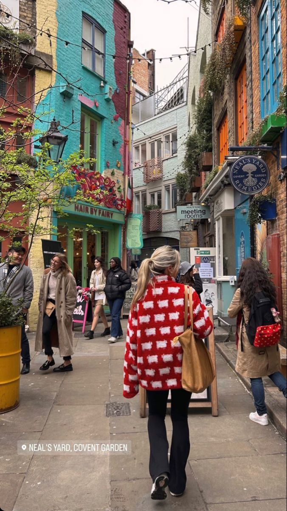

OUR STORY
My love affair with London began with a crumbly scone and a rainy afternoon spent huddled in a tiny
bakery. Outside, double-decker buses trundled by, their red paint slick with the downpour. Inside,
warmth bloomed from the oven, filling the air with the sweet dance of vanilla and cinnamon. Each bite of that scone was a portal to another world, a world steeped in history, mystery, and the comforting clink of teacups. It was then, as a wide-eyed child, that I fell for London, and for the magic woven into its bakeries.
Fast forward to bustling college life, my backpack overflowing with dreams bigger than the city itself. My wanderlust took me across continents, each new bakery a whispered secret, a taste of a culture's soul. But London, with its cobbled streets whispering tales of Dickens and Austen, always called me back. Its bakeries weren't just places to grab a pastry; they were havens, sanctuaries where stories unfolded over steaming mugs and laughter.
With this website, I want to share my London, the London not just of tourist traps, but of hidden gems tucked away in quaint corners. I want you to experience the city through buttery croissants and melt-in-your-mouth meringues, to find comfort in the familiar aroma of freshly baked bread. My website won't just list bakeries; it will tell their stories, the passion behind each creation, the warmth that awaits you within. So, join me on this delicious journey, and let's explore London, one bite at a time.

The Aroma of Adventure: My Journey to London's Beating Bakery Heart
The scent of warm bread, yeasty and sweet, has always held a peculiar power over me. It's a scent that transports me, not just through time, but across continents, conjuring up memories of childhood visits to my grandmother's kitchen and bustling bakeries tucked away in quaint European towns.
London, with its grand history whispering from every cobbled street was unlike anything I'd ever known. It was a city that thrummed with energy, a melting pot of cultures where ancient traditions danced with modern innovation. And amidst this vibrant tapestry, I discovered a hidden gem – the city's incredible bakery scene.
One of my many encounters was purely accidental. Huddled in a cozy cafe for refuge from a sudden downpour, I stumbled upon a scone that was more than just pastry. It was a revelation – crumbly yet soft, bursting with buttery flavor, and carrying the warmth of the oven it had just emerged from. In that moment, amidst the clatter of teacups and the murmur of conversations, I felt a connection, a belonging, that transcended the rain-drenched streets outside.
From then on, bakeries became my compass, guiding me through the labyrinthine lanes of London. Each one was a unique universe, filled with the aroma of possibility and the comforting hum of ovens working their magic. In a quaint bakery tucked away in Notting Hill, I savored melt-in-your-mouth meringues, their delicate sweetness a counterpoint to the neighborhood's vibrant street art. In a bustling Soho establishment, I devoured flaky croissants, their buttery layers a testament to generations of culinary expertise. With every bite, I not only tasted the city, but also its stories – the whispers of immigrants who brought their traditions, the passion of bakers who poured their hearts into their craft, and the countless conversations and connections forged over plates piled high with pastries.
But as I delved deeper, I realized there was more to London's bakeries than just delicious food. They were havens, sanctuaries where the city's frenetic pace slowed down, replaced by the comforting warmth of shared experiences. I witnessed strangers bond over recommendations, families celebrate special occasions with elaborate cakes, and artists find inspiration in the quiet hum of the bakery. These weren't just businesses; they were beating hearts within the city's fabric.
However, as I explored online resources dedicated to London's food scene, I noticed a gap. While there were numerous listings and reviews, they lacked the soul, the stories, the human connection that truly defined these special places. This is where my website, "A Baker's Tale: Unveiling London's Delicious Secrets," was born.
It's not just a directory of bakeries; it's a window into the city's soul, told through the lens of flour, sugar, and passion. Each bakery I feature is more than just a location on a map; it's a story waiting to be discovered. I delve into the history of establishments, from family-run bakeries passed down through generations to innovative newcomers shaking up the scene. I interview the bakers, capturing their passion, their struggles, and their triumphs. And I share the stories of the people who frequent these havens, the laughter shared over coffee, the friendships forged over flaky pastries.
This website is my love letter to London, a testament to the city's ability to weave magic into the everyday. It's an invitation to join me on a delicious adventure, to explore hidden gems beyond the tourist trail, and to discover the stories waiting to be savored with every bite. So, put on your walking shoes, pack your appetite for adventure, and let's embark on a journey through London's beating bakery heart. Remember, the best stories are often found between the pages of a good book and the layers of a perfect pastry.